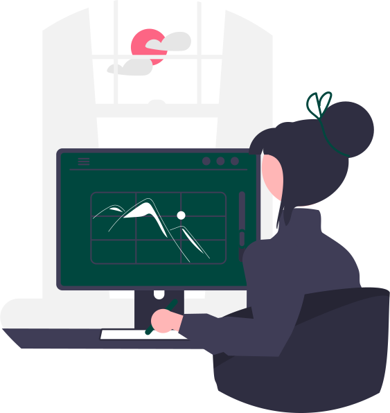

.svg)
Services that we Offer
Web Designing
Clients that hire you to design a website are extremely likely to need additional service at some point. Even if the website is built with a content management system (like WordPress) that allows the client to easily add and manage the content on their own, there will still be some maintenance needed at some point. This maintenance could involve minor design or layout changes, new sections of the website, or other details that the client is not able to handle on their own through a CMS. When it comes to ongoing maintenance, there are a few different ways you can offer this service. You could charge an hourly rate and bill clients for whatever worth they need, or you could create a package and charge a monthly retainer. For example, the package would have a flat monthly fee and would entitle the client to specific things like priority support and a specific number of hours of work each month.

Fixing bugs and testing for usability.
Customer experience is the most significant business differentiator today. Therefore, software issues encountered by the customers must be quickly addressed, preferably proactively. Unlike traditional on-premises enterprise software where technical support folks and product managers could ask customers to provide a ton of diagnostic data and reproducible test cases, modern cloud application developers rarely have direct access to end-users and often struggle to reproduce the problem locally. The net result is that the UX bug issues either remain unresolved or take awfully long to debug and fix.
Analytics
Almost all of your web design clients will want access to some data and analytics to provide insight into the effectiveness of their site. Of course, Google Analytics is a powerful free program that your clients can use, but GA can be a bit overwhelming and confusing. Some of your clients may be looking for a professional to help with interpreting the reports from Google Analytics and to implement any changes that are needed to improve the results.